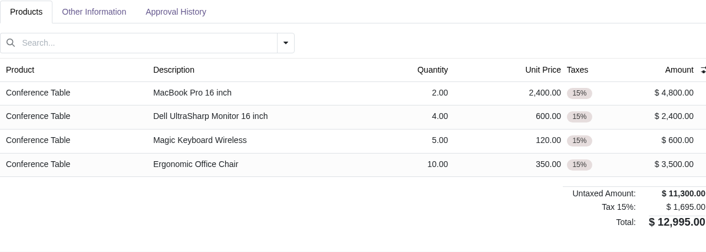
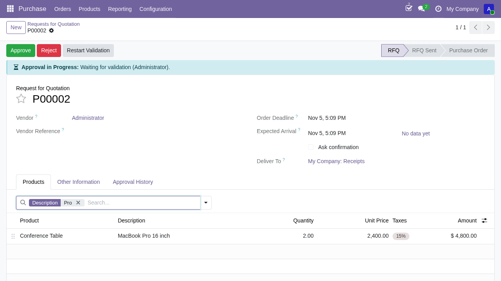
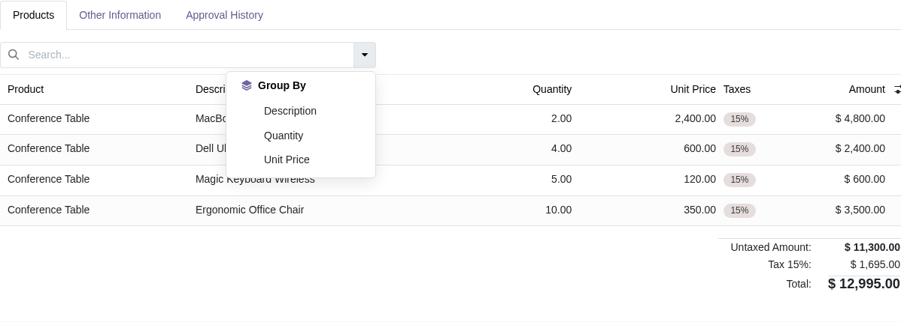
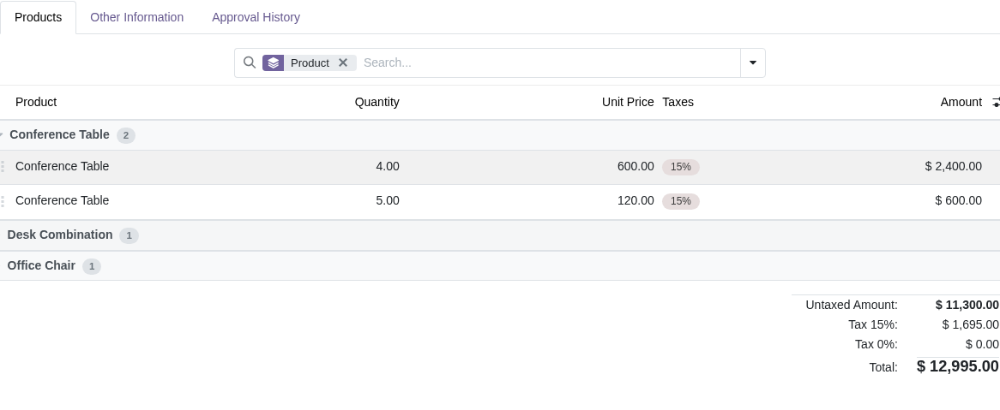

Instantly search, filter, and group records inside any one2many or many2many list view with a centered search bar and zero server round-trips.
Supercharge line-item workflows with fast client-side searching and grouping right inside notebook tabs.
Filtering happens 100% on the client browser. No RPC calls, no database reloads, and zero lag even when filtering through dozens of order lines.
Type a keyword to search across Char, Text, Numbers, and relational Many2one fields with clean colored facet chips.
Group lines by any column with collapsible accordions and record count badges. Combine search and grouping simultaneously with ease.
Automatically detects all visible columns when search_fields is omitted, dynamically updating search suggestions as optional columns are toggled.
Full compatibility with Sale Orders, Purchase Orders, and Invoice lines. Add products, sections, and notes naturally without breaking UX.
Speed up power users with keyboard navigation: Enter commits search, arrow keys navigate suggestions, and Esc clears dropdowns.
Designed to feel native to Odoo 19 with clean aesthetics and familiar interaction patterns.
A dedicated Odoo-style search bar sits comfortably centered above the list view control panel, preserving standard pagination and button layouts.
one2many and many2many sub-views.
Typing a query instantly opens a scoped search dropdown. Choose a target field to commit a color-coded facet chip, or hit Enter to commit immediately.

Click the caret menu next to the search bar to organize lines into clean grouped sections. Groups start collapsed for maximum readability.

When used on Accounting Invoices, Purchase Orders, or Sales Orders, the widget preserves standard Section and Note rows without disruption.
account or purchase modules.
Simply assign widget="x2many_search" to any one2many or many2many field in your XML architecture:
search_fields: List of field names to enable for searching and grouping. If omitted, all visible columns are auto-discovered and kept in sync dynamically as optional columns are toggled!